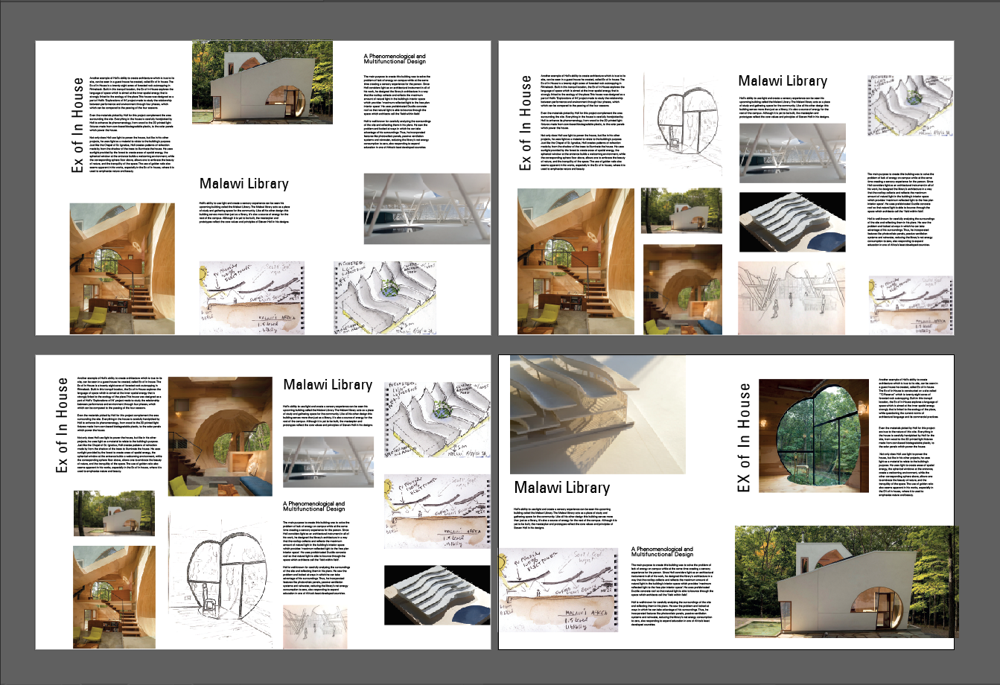
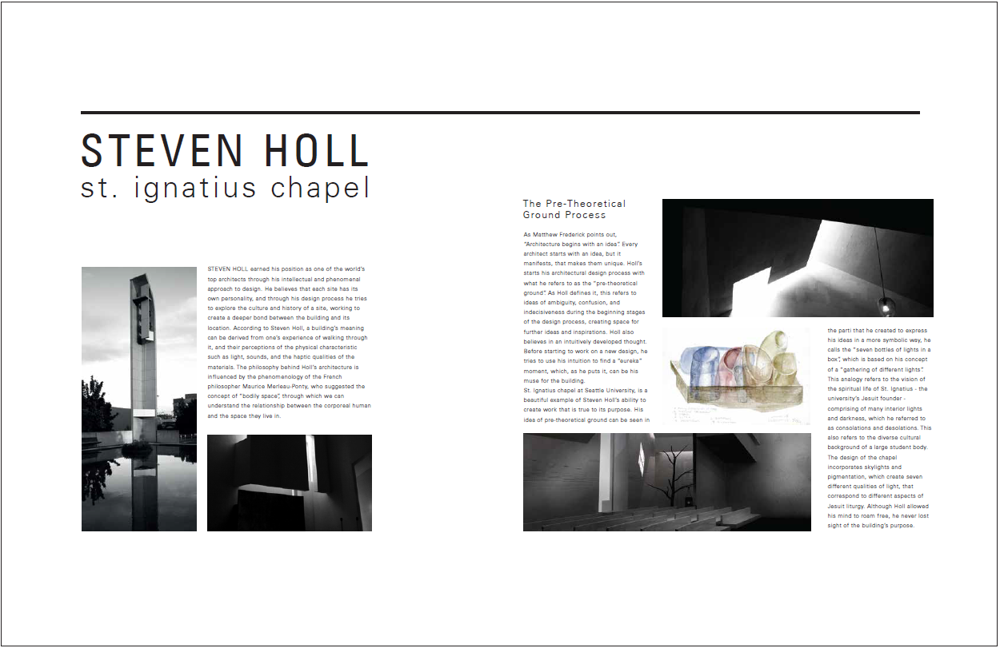
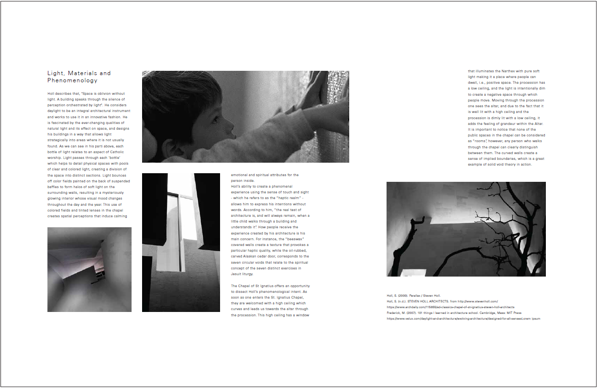

Spread Design
This project was the third project in the IAT 233 (Spatial Design) course. The project required us to model an architectural space and explore art direction strategies and design two spreads which contained information on the space as well as it's designer.This project was supposed to be completed in teams of 5-6 students.We were assigned St. Ignatius Chapel by Steven Holl. As a team we chose the parts we all were the most interested in
Our Team Members and Roles
- Pranav Sharma(Me) - Copywriting, Research and Graphic Design
- Samyak Sah - Copywriting, Research and Graphic Design
- Dean Tin - sketching and art direction
- Cameron Dawson - Modelling and Quality Control
- Navpreet Matharu - Modelling
Our Process
Since me and Samyak were working on Copywriting, Research and graphic design together, we first started researching by finding some books and online resources on Steven Holl and St. Ignatius Chapel. We both started reading some resources and discussed our key findings and jotted them down on our shared google drives doc.
After researching and making notes from our resources. We started focusing on what type of content we wanted to showcase in our spreads. We then went over the brief again and noted key points which we could focus on.
We also wanted to work on design of the layout. So we experimented with different layout designs while working on our spreads.
Once we had our content ready, we then imported it illustrator and tried it out with our different layouts. While doing this we went over the brief again and found some content that we hadn’t put in our spreads, so we found pictures and tried to incorporate that too. Once we were done incorporating that, our spreads for week one were ready.
From the critique we received issues in our spreads such as lack of whitespace, too much info and no clear structure. We started our week two taking these issues as a challenge and worked hard to improve them. We started with some sketches of layouts we could work with.
To achieve consistency we also wanted to treat our images in a way that they showed the special qualities of Steven Holl while maintaining consistency and not overpower the copy instead form a cohesive mix. We compiled a moodboard of photographs with architectural spaces with low saturation. Through keeping images low saturated, we were able to maintain a consistency between them while capturing the essence of the St. Ignatius Chapel.
To reduce content, we removed the content which felt redundant and started working on the copy again. We shifted our focus and explored area which made Steven Holl stand out compared to other architects.
 To Conclude
Our week two critique went significantly well, and our hard work paid off. The teaching staff appreciated our spreads and also congratulated us for the significant improvement we made in a week.
Other Projects
Tools Used